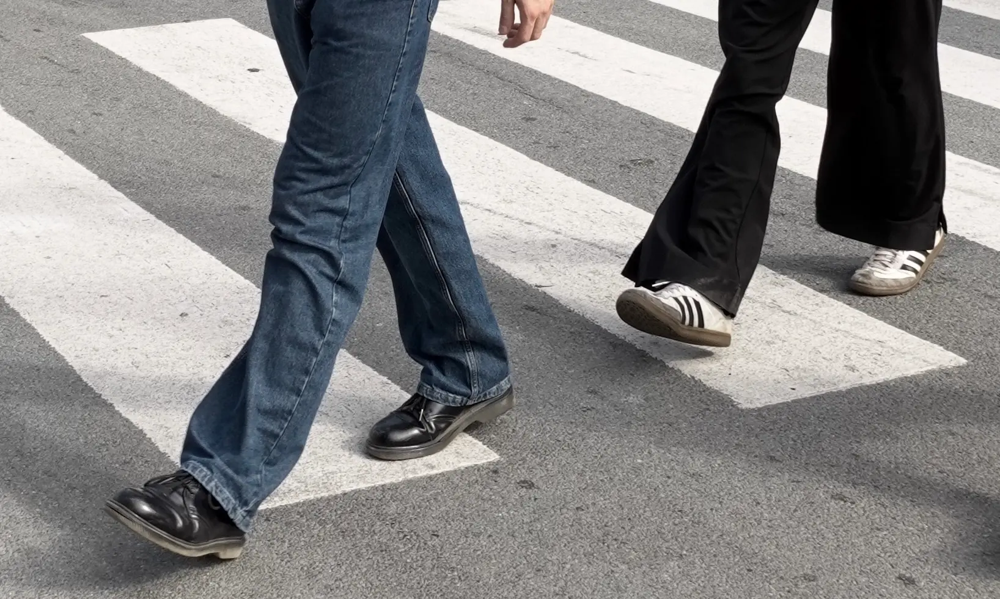
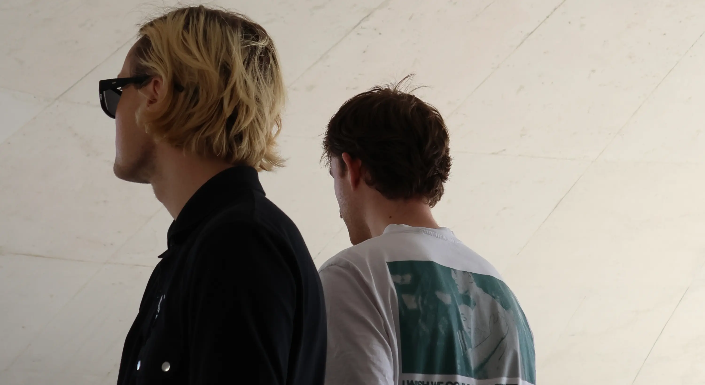

ABOUT
We are two producers, songwriters and mixing engineers from Copenhagen, Denmark who have worked together on several projects over the years. Our core values lie in collaboration. We are always set in making a creative environment that is both true to the artist's sound but also musically expanding. We capture authentic moments and shape them into records that resonate.
Our musical backgrounds stem from expertise in different instruments, different tastes and workflows, and it allows us to bring out something unique when creating together.
